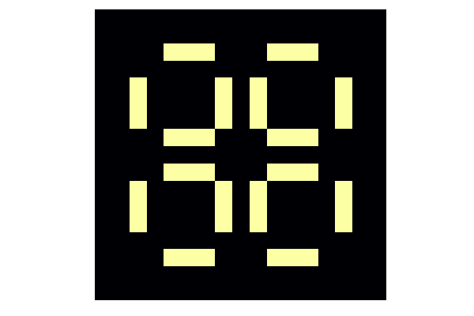

Conway's Game of Life
The Game of Life (the following description is taken from Wikipedia), also known simply as Life, is a cellular automaton devised by the British mathematician John Horton Conway in 1970. It is a zero-player game, meaning that its evolution is determined by its initial state, requiring no further input. One interacts with the Game of Life by creating an initial configuration and observing how it evolves. It is Turing complete and can simulate a universal constructor or any other Turing machine.
The universe of the Game of Life is an infinite, two-dimensional orthogonal grid of square cells, each of which is in one of two possible states, live or dead, (or populated and unpopulated, respectively). Every cell interacts with its eight neighbours, which are the cells that are horizontally, vertically, or diagonally adjacent. At each step in time, the following transitions occur:
- Any live cell with two or three live neighbours survives.
- Any dead cell with three live neighbours becomes a live cell.
- All other live cells die in the next generation. Similarly, all other dead cells stay dead.
The initial pattern constitutes the seed of the system. The first generation is created by applying the above rules simultaneously to every cell in the seed; births and deaths occur simultaneously, and the discrete moment at which this happens is sometimes called a tick. Each generation is a pure function of the preceding one. The rules continue to be applied repeatedly to create further generations.
Write a function neighbours that return the number of live neighbours of the given cell. The function should accept the world matrix of boolean values that represents state of all cells (true if cell is alive and false otherwise) and index of the row and column of the target cell.
Hint: use the following properties of the mod1 function to implement periodic boundaries
julia> mod1(1, 4)
1
julia> mod1(4, 4)
4
julia> mod1(5, 4)
1Bonus: define more general function that compute number of alive cells in a neighborhood of an arbitrary size.
Solution:
One way how to define the neighbours function is to manually write all neighbours indexes as follows
function neighbours(world, row, col)
n, m = size(world)
# this implements periodic boundaries
down = mod1(row + 1, n)
up = mod1(row - 1, n)
left = mod1(col - 1, m)
right = mod1(col + 1, m)
return ( world[up, left] + world[up, col] + world[up, right]
+ world[row, left] + + world[row, right]
+ world[down, left] + world[down, col] + world[down, right])
endNote that it is possible to write an expression on multiple lines. However, the approach above can not be used to define a general version of the neighbours function. In this case, we can use nested loops. Firstly we compute proper row indexes using a linear range in combination with the mod1 function
rows = mod1.(row .+ (-r:r), size(world, 1))Column indexes can be computed similarly. Then we use nested loops to iterate through the rows and columns defined above. Do not forget to subtract the state of the middle cell.
function neighbours(world, row, col; r = 1)
rows = mod1.(row .+ (-r:r), size(world, 1))
cols = mod1.(col .+ (-r:r), size(world, 2))
return sum(world[i, j] for i in rows, j in cols) - world[row, col]
endAdd new method to the neighbours function that for the given world matrix returns matrix that contains numbers of living neighbours.
Solution:
We created a function that computes the number of living neighbours in the exercise above. One way how to create a matrix with numbers of living neighbours is as follows
function neighbours(world)
n, m = size(world, 1)
return [neighbours(world, row, col) for row in 1:n, col in 1:m]
endWrite a function willsurvive that returns true if the cell will survive based on the conditions described in the beginning of the section, and false otherwise. This function should accept two arguments: state of the cell (true/false) and the number of living neighbours.
Solution:
This function can be written using the if-elseif-else statement as follows
function willsurvive(cell, k)
if k == 3
return true
elseif k == 2 && cell == 1
return true
else
return false
end
endBut we can also write the function in simpler form. The first thing that we have to realize the first two conditions can be merged together using short-circuit evaluation. Since the function returns only true or false, we can write the function on one line as follows
willsurvive(cell, k) = k == 3 || k == 2 && cell == 1Use all functions defined above to write a function evolve! that evolve the given world matrix into a new generation.
Solution:
The first thing we have to do is to compute the matrix with numbers of living neighbours. Then we can iterate over all elements of the given world matrix and copute new state of the current element using the willsurvive function
function evolve!(world)
ks = neighbours(world)
for i in eachindex(world)
world[i] = willsurvive(world[i], ks[i])
end
return
endIn the four exercises above, we defined a function that are necessary to create an animation of Game of Life. Use the following code to get the initialization of the world
world = zeros(Bool, 30, 30)
row, col = 15, 15
world[row, col] = 1
world[row, col + 1] = 1
world[row - 1, col + 6] = 1
world[row + 1, col + 1] = 1
world[row + 1, col + 5] = 1
world[row + 1, col + 6] = 1
world[row + 1, col + 7] = 1To create an animation, we will use the Plots package, that we introduced in the previous lecture
using Plots
anim = @animate for i in 1:150
heatmap(world; axis = nothing, border = :none, cbar = false, ratio = :equal)
evolve!(world)
end
gif(anim, "gameoflife.gif"; fps = 10)
Many different types of patterns occur in the Game of Life. For example, the following initialization is called pulsar
world = zeros(Bool, 17, 17)
line = zeros(17)
line[5:7] .= 1
line[11:13] .= 1
for ind in [3,8,10,15]
world[ind, :] .= line
world[:, ind] .= line
end